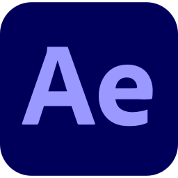
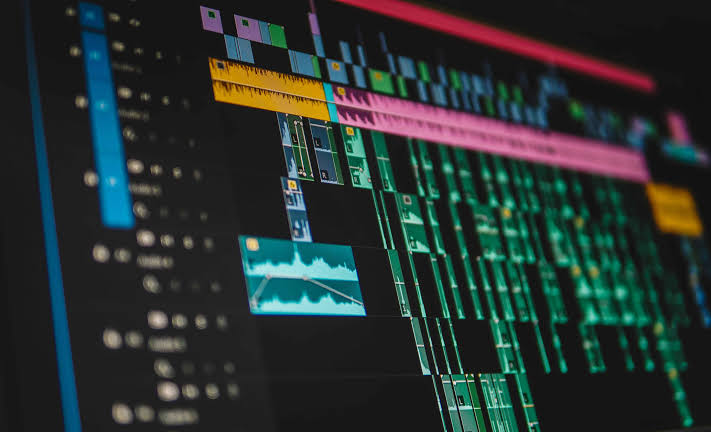
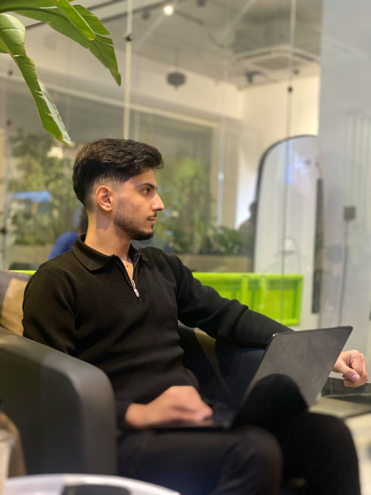

AE / 09 CLIPSVIDEO COLLECTION
متاح لمشاريع مختارة · 2024—25
أنا بشار زاهد — Video Editor & Motion Graphic، أحوّل اللقطات الخام إلى أفلام بإيقاع واضح وحركة لها معنى.
01 / SELECTED WORK
مجموعة من التجارب التي تجمع المونتاج، الموشن، والصوت في قصة واحدة.

AE / 09 CLIPSVIDEO COLLECTION

VE / 01 CLIPVIDEO COLLECTION
VIDEO COLLECTION
02 / THE PRACTICE
أحوّل اللقطات الخام إلى تجارب تتحرك بإيقاع واضح. من أول cut إلى آخر frame، أبحث عن اللحظة التي تجعل الفكرة تُحس قبل أن تُفهم.
ابدأ مشروعًاWHAT I DO
03 / THE PROCESS
سير عمل بسيط ومركّز، حتى تبقى الطاقة في المكان الصحيح: داخل العمل.
أفهم هدفك، جمهورك، والإحساس الذي تريد تركه.
أبني الإيقاع، أختار اللقطات، وأحرك الفكرة بصريًا.
لون، صوت، وتسليم جاهز للنشر أينما كان.

أضف ملف الفيديو في مجلد media/ ثم حدّث رابط المشروع في script.js.
media/afterlight.mp4FILM EDIT / 2024